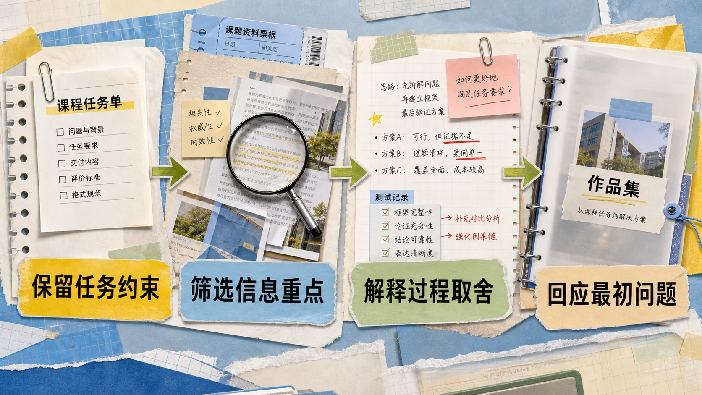

微信公众号 AI 排版 SKILL · 开源
把文章，
排成好看的
公众号推文。
用 AI 完成排版、配图，也能从组件参考图
创作自己的整套风格。
先看效果无需安装，使用时交给 Agent 安装。
看一篇文章，如何变成推文。
一句话排版/整篇换风格/参考图定制主题
SELECTED EDITIONS / 01 — 03
不同的内容，各有表达。
三篇真实成稿，打开就能读。
CAMPUS BULLETIN01

青春校园 / 把灵感展开↗
WARM HUMANIST02
温暖人文 / 日常的温度↗
POP POSTER03
波普海报 / 让观点出场↗
真实排版 · 公开示例 · AI 配图点击卡片，阅读成稿 ↗
CAMPUS BULLETIN
青春校园
真实主题 · 静态样例屏幕内滚动阅读 ↓
BEYOND THE TWELVE / YOUR OWN THEME
从一个喜欢的细节，
长成你的整套风格。
喜欢一个标题、一款相框，或一枚有趣的贴纸？附上组件截图，让 Agent 寻找相关参考、联想关联元素，把这个细节延展成整套标题、引用、图文与重点组件。确认后保存为主题包，下一篇接着用。
先安装，再把需求交给 Agent。没有图也可描述风格探索，但可能需要更多方向确认。在线页不接收上传或生成；正文可编辑，主题包可导入导出，微信保存后的效果仍需核对。
01 / 给参考
“想要电影手帐的感觉”
推荐附上喜欢的组件截图；也可描述气质与用途探索。
03 / 看全篇，再复用
结构检查 + 视觉评审 → 样本册与示例文章 → 本机主题包
创作方式示意，非一次生成结果的承诺。参考素材需尊重原作者权利。YOUR NEXT EDITION
下一篇，
用你的文章试试。
交给 Agent → 工作台定稿 → 复制图文 / 保存草稿
查看安装说明 ↗